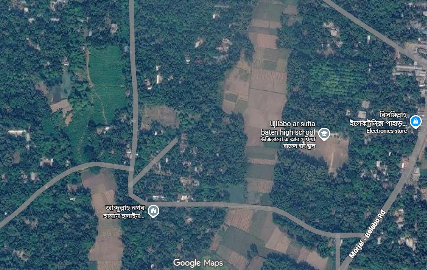
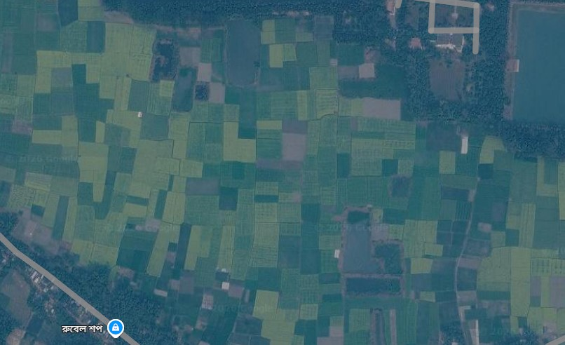
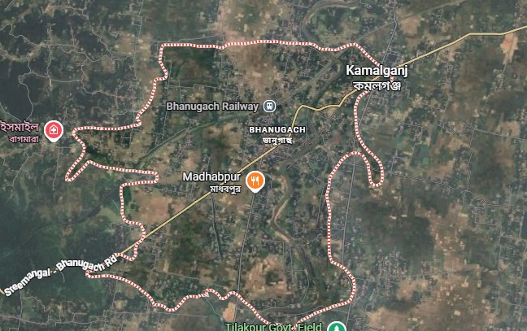
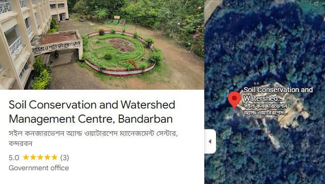
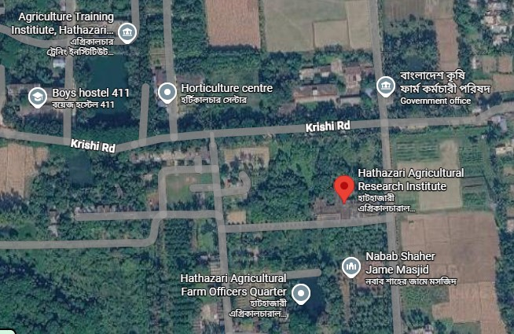
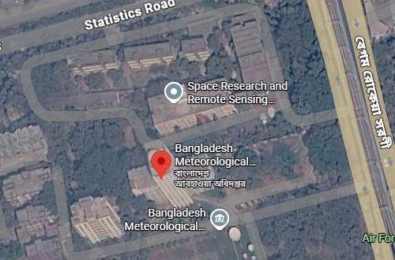
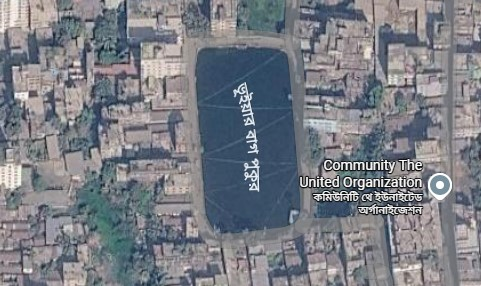
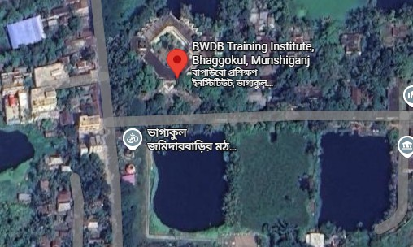
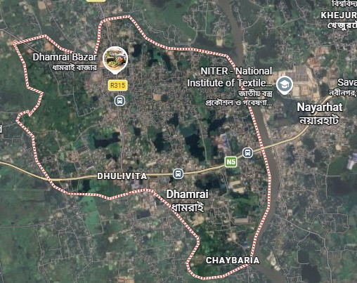

University Results
From the Department of Soil, Water and Environment, which is adminstered under the Faculty of Biological Sciences, University of Dhaka.
| Year / Semester | CGPA / GPA | Credits | Status |
|---|---|---|---|
| 1st Year | 3.73 / 4.00 | 28 Credits | Completed |
| 2nd Year | 3.66 / 4.00 | 34 Credits | Completed |
| 3rd Year | 3.24 / 4.00 | 38 Credits | Completed |
| 4th Year | 3.49 / 4.00 | 40 Credits | Completed |
| Overall CGPA | 3.51 / 4.00 | 140 Credits | B.S. Complete |
University Courses and Results
Noteworthy courses completed during the Bachelor of Science program.
| Course Code | Course Name | Credit | Result |
|---|---|---|---|
| SWE 101 | Introduction to Soil-I | 2.00 | A- |
| SWE 102 | Introduction to Soil-II | 2.00 | A |
| CM 100F | Fundamentals of Chemistry | 4.00 | A |
| GLT 101 | Geology | 2.00 | A+ |
| GLP 102 | Petrology and Mineralogy Lab | 2.00 | A+ |
| SWE 201 | Soil Mineralogy and Soil Colloids | 2.00 | A |
| SWE 203 | General Microbiology | 2.00 | A |
| SWE 204 | Calculus | 2.00 | A+ |
| SWE 205 | Bio-statistics | 2.00 | A- |
| SWE 207 | Water Chemistry | 2.00 | A+ |
| FC 2 | Functional and Communicative English | 2.00 | A+ |
| CM 241H | Chemistry of Elements | 2.00 | A+ |
| CMGL 101H | General Chemistry Laboratory | 2.00 | A+ |
| SWE 302 | Soil Chemistry-I | 4.00 | A- |
| SWE 304 | Soil and Environmental Microbiology | 2.00 | A |
| SWE 401 | Soil Survey and Remote Sensing | 2.00 | A- |
| SWE 404 | Soil Management | 2.00 | B+ |
| SWE 405 | Agronomy | 2.00 | A |
| SWE 407 | Soil Pollution and Waste Management | 4.00 | A |
| SWE 409 | Soils of Bangladesh | 2.00 | B |
| SWE 410 | Soil Chemistry-II | 2.00 | B |
| SWE 412 | Seminar | 2.00 | A+ |
University Field Works
Field visits are a crucial part of our Bachelor's program, specially important for Soil Science. Therefore, we have visited many places during our academic journey at the University of Dhaka.
The study began with a briefing from Soil Resource Development Institute (SRDI) officer Dr. M A Wadud's knowledge and experience sharing. Followed by the study of three soil series, land forms of broadly dissected soils and field visit to certain soils.

In this trip, we visited an automated web-based agricultural data transfer system with alternate wetting and drying (AWD) irrigation method applied in a rice field. The electronic systems collect and upload realtime data on a website for better farming decision making.

Kamalganj trip being one of the most learning-friendly trip because of the diverse landscape. There were 4 different soil series present within our assigned area and at least 2 different Agroecological zones (AEZ). We were shown pits of 2 soil series and we ourselves dug 2 minipits, and delineated map based on land use, land type and soil series. Later suggested sustainable alternative to the observed land's agricultural practices.

The study included a brief about technologies to prevent soil loss in hill soils and technologies to reduce and prevent soil erosion loss. Later in the field visit, we visited the hills where technologies have been implemented.

We studied and were presnted with seeds of different different varieties, some are invented and produced at RARS. Later the field visit demonstrated a number of crops in the fields, irrigation technologies, and protection methods to gain highest yields.

We learnt and observed the weather forecast devices which predict and present real time weather. We also visited an earthquake mapping observatory where it observes and analyses the tiniest bit of siesmic activity with precision.

It was a routine practical for our course SWE 104 to collect water sample from natural waterbody and measure its temperature, EC, DO, BOD, COD, and Eh to analyze water quality of the waterbody.

We learnt about flood, river current, and river-flood related terminologies, including a mini-weather station to acquire hydrological data to correlate with river condition.

It was our primary introduction to soil pit and profile, we explored the natural condition soil and observed the whole process of soil profile study.
